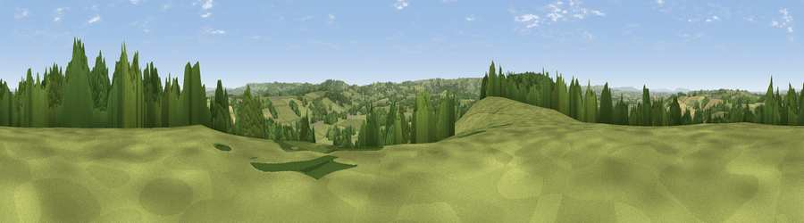

Abbot's Hill
#17822 in England · top 40% of its area beats it · near HalstockWhere it is
The exact computed spot (ST 53475 09875). Click the marker for map links.
The view, rendered

A 360° render of this exact spot computed from the terrain model, tree cover and land cover — summer colours, afternoon light, calibrated against photographs of famous viewpoints. Real trees, hedges and buildings will differ in detail.
The panorama
Grey silhouette: terrain skyline in each direction (720 bearings, Earth curvature and refraction included). Dashed green: skyline with trees (+15 m) and buildings (+8 m) as obstacles. Blue strip: how far the ground is visible on each bearing.
Where the view opens
Wedge length = distance to the farthest visible ground on that bearing (vegetation-aware). Rings at 10, 25 and 50 km.
What fills the view
68% grassland · 20% woodland · 11% cropland · 1% built-up
Angular shares of the visible panorama (visual magnitude), not map area. Landscape diversity 0.39 (0–1 Shannon).
Key numbers
More beautiful places nearby
The staircase of upgrades: each row has a higher view potential than everything closer. Driving times are estimates from straight-line distance, calibrated against real road routing — check an actual route before setting out.
| Place | Direction | Drive | Score |
|---|---|---|---|
| Viewpoint near Halstock | SW · 1 km | ~2 min | 56.7 |
| Viewpoint near East Coker | NNW · 2 km | ~6 min | 59.9 |
| Viewpoint near West Coker | NNW · 4 km | ~9 min | 60.3 |
| Viewpoint near Chedington | SW · 6 km | ~12 min | 68.5 |
| Viewpoint near Chedington | SW · 6 km | ~13 min | 70.5 |
| Viewpoint near Chedington | SW · 6 km | ~13 min | 70.7 |
| Viewpoint near Chedington | SW · 8 km | ~16 min | 71.8 |
| Ham Hill | NW · 9 km | ~18 min | 73.5 |
50.88648, -2.66278 · source: dobih hill · position refined by local search. Computed location — check access rights before visiting.